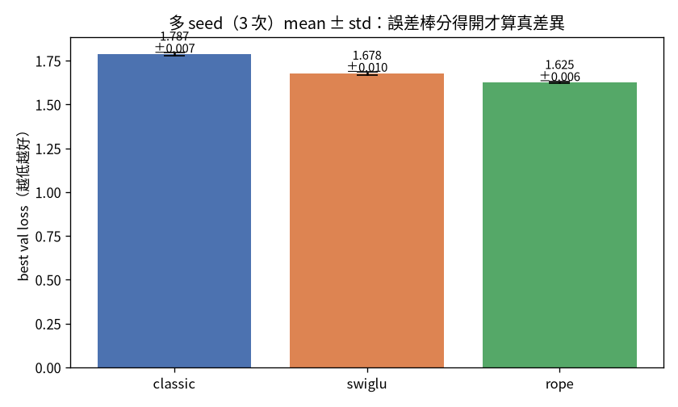
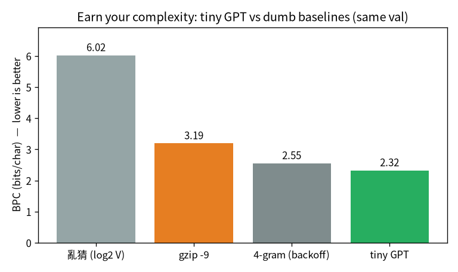

flowchart LR A["01 GPT"]-->B["02 零件"]-->C["03 效率"]-->D["04 資料"]-->E["05 評估"]-->F["06 服務"]-->G["07 治理"]-->H["08 漂移"] E -.後訓練.-> I["09 對齊"] classDef here fill:#c0392b,color:#fff,stroke:#7b241c,stroke-width:2px; class E here
5 不騙自己的評估
一句話：評估難的不是算數字，是選對該量的東西、並質疑它有沒有被汙染。這是整本書的主線， 這一章把它講透。
訓練一個模型不難，難的是「誠實地知道它到底好不好」。這一章講四件事：先講判準、用對的尺、知道什麼 時候該重複跑、以及——最重要的——質疑你的尺有沒有被汙染。
注记這章的定位（讀之前先對齊期待）
假設你已經會：第 1 章的 cross-entropy loss、第 2 章的對照實驗。不需要任何統計學背景 （會用到的都會在這裡建立直覺）。
學完你會：(1) 永遠先有「亂猜基準」再看數字；(2) 逐行把 raw loss 換算成跨 tokenizer 公平的 BPC，並懂為什麼不能直接比 raw loss；(3) 在你自己的 CPU 上親手跑「亂猜基準 + BPC + 多 seed mean±std」，量出一個具體的「雜訊尺度」當重大性判準。最重要的是學到：評估的真正難點是選對指標、 並質疑它有沒有被汙染。 本章 💻 配套程式 tiny_eval.py 純 CPU、約 3–4 分鐘。
提示🎯 給技術主管：本章關鍵術語速查（懂的人可跳過）
不必親手實作也能跟上——每個術語一句白話 + 為什麼你該在意。
- loss / cross-entropy：「猜下一字」平均錯多少。在意它：訓練的北極星——但跨設定不能直接比。
- 亂猜基準：完全亂猜時的 loss（\ln V）。在意它：沒有基準，任何數字都沒意義。
- BPC（bits per character）：跨 tokenizer 公平的尺。在意它：用錯尺，A/B 結論可能整個翻過來。
- held-out（保留集）：用模型沒看過的資料評。在意它：看 train 會被「死背」騙。
- 多 seed / 重大性：跑多次看 mean±std。在意它：單一漂亮數字可能只是運氣；只在「差距小、決策貴」時才多跑。
- 指標被汙染：尺本身偏了（如測試集洩漏）。在意它：全書最重要一課——先質疑你的尺，再信數字。
5.1 先講判準，再驗證
最容易自欺的方式，是訓完之後才去找「它哪裡好」。所以我的紀律是訓練前先寫死「什麼叫成功」， 訓完逐項對，不事後移動球門：
| 判準 | 怎麼量 | 結果 |
|---|---|---|
| 有沒有在學？ | val loss vs 亂猜基準 \ln 14210 = 9.56 | 9.59 → 3.67 ✅ |
| 會不會類推？ | test loss ≈ val loss？ | test 3.695 ≈ val 3.677（gap 0.018）✅ |
| 學了多少？ | BPC vs 無條件熵 9.70 | 5.33 bits/char（靠上下文砍 45%）✅ |
| 像不像中文？ | 質性讀生成樣本 | 真詞/語法/標點對，整體不連貫＝小模型水準 ✅ |
注意「亂猜基準」那一格：一個 vocab 14,210 的模型，如果完全亂猜，loss 就是 \ln 14210 \approx 9.56。 所以 val loss 從 9.59 掉到 3.67，第一件事就證明了「它真的在學」，而不是我在自我感覺良好。先有基準， 數字才有意義。
5.2 用對的尺：BPC 而不是 raw loss
我做了 char-level 和 BPE 兩種 tokenizer 的對比，結果踩到一個陷阱：
警告跨 tokenizer 的 raw loss 不能比
char（vocab 65）的 cross-entropy 是 1.77，BPE（vocab 365）是 3.34——看起來 char 大勝？錯。 兩者的「類別數」不同（65 類 vs 365 類），cross-entropy 的尺度本來就不一樣，不能直接比。
公平的指標是 BPC（bits per character）：
\text{BPC}=\frac{\text{loss}}{\ln 2}\Big/\frac{\text{字元數}}{\text{token 數}}
把它換算到「每個字元幾 bit」這個跨 tokenizer 通用的尺度上。換完：char 2.56 vs BPE 2.37——其實是 BPE 更好、而且序列只有一半長。換對尺，結論整個翻過來。
5.2.1 逐行把 BPC 算出來
BPC 不神祕，三步就從 raw loss 換出來。我們逐步建它（對應 tiny_eval.py 印出的數字）。
第 0 步——loss 的單位是 nat，換成 bit。 cross-entropy 預設用自然對數，單位是 nat。除以 \ln 2 換成 bit（資訊理論的通用單位）：
第 1 步——把「每 token」換成「每字元」。 不同 tokenizer 一個 token 含的字元數不同（char-level 是 1、BPE 可能 2–3）。除以「平均每 token 幾個字元」才公平：
第 2 步——char-level 的特例。 char-level 下每個 token 就是一個字元，n_chars/n_tokens = 1， 所以 BPC 直接就是 loss / ln2。tiny_eval.py 用的就是這個特例：
關鍵在第 1 步那個除法：它把「類別數不同」這個不公平因素正規化掉。少了它，你會像本章開頭那樣 拿 char 的 1.77 去跟 BPE 的 3.34 直接比，得到完全相反的結論。
5.3 重大性原則：什麼時候該跑多 seed
單次訓練跑出來的數字，帶著抽樣的運氣。我用多 seed（跑 N 個不同隨機種子，報 mean ± std + 誤差線） 確認了第 2 章 SwiGLU/RoPE 的改善是真的：

實測 3 seed：classic 1.787±.007、SwiGLU 1.678±.010、RoPE 1.625±.006。SwiGLU 比 classic 差 0.109，是雜訊 （≈0.01）的 11 倍；RoPE 差 0.162，是 22 倍——確認是真差異，不是運氣。我還抓到一件事：之前單次跑的 classic baseline 1.7712 其實是運氣偏低，真實 mean 是 1.787——單一裸數字會騙人。
但多 seed 不必每次做。它的價值非均勻：
提示重大性原則（借自稽核）
大差距（如 SwiGLU/RoPE）單次跑就看得出來，多 seed 是冗餘的。多 seed 真正有用的場合，是「差距小到 跟雜訊同級」的決策——那時單次會誤導你。
所以原則是：只在「差距小、決策貴、或要對外宣稱」時才加做多 seed。 這跟稽核的重大性原則一模一樣： 不是每個科目都查到底，是把查核力氣放在「錯了會出大事」的地方。
5.4 💻 在你的機器上：亂猜基準 + BPC + 多 seed
前三件評估紀律——先有基準、用對的尺、看重大性——可以一次跑出來。配套程式 tiny_eval.py 用第 1 章的 char-level 小 GPT，跑 3 個不同 seed，純 CPU 約 3–4 分鐘：
在我的 Framework 16（純 CPU）上：
vocab=65 device=cpu
亂猜基準 = ln 65 = 4.174 nat（模型要明顯低於它才算在學）
seed 1337: val loss 1.6757 BPC 2.418 bits/char
seed 42: val loss 1.6792 BPC 2.423 bits/char
seed 7: val loss 1.6856 BPC 2.432 bits/char
3 seeds: val loss 1.6802 ± 0.0050 BPC 2.424 ± 0.007 bits/char
相對亂猜基準 4.174，模型把不確定性砍了 60%。怎麼讀——三條紀律各一個數字：
- 先有基準：亂猜是 \ln 65 = 4.174。val loss 掉到 1.68 才證明「真的在學」、砍掉了 60% 的 不確定性——沒有基準，1.68 這個數字本身沒有意義。
- 用對的尺：每個 loss 旁邊就是換算好的 BPC（char-level 下 = loss/ln2）。要跟別的 tokenizer 比，比 BPC，不比 raw loss。
- 重大性：3 個 seed 的 std ≈ 0.005。這就是你的「雜訊尺度」——一個架構改善要比 0.005 大上 好幾倍（像第 2 章 SwiGLU 的 −0.019、RoPE 的差異）才能宣稱「真的有差」，而不是 seed 的運氣。
提示把這個 std 當成你的「顯著性門檻」
跑出 std≈0.005 後，回頭看任何一個「我換了 X，loss 從 1.680 變 1.678」的宣稱——差 0.002 比雜訊還小， 那是運氣不是改善。這就是重大性原則的操作型定義：先量雜訊，再決定一個差異值不值得相信、要不要 多跑 seed 確認。
5.5 先贏過笨基準：你的模型有沒有「賺到」複雜度
到這裡，我們的評估都還在跟自己比（val loss、BPC、亂猜基準）。但「比亂猜好」門檻太低—— 亂猜根本沒在學。真正該問的是：你那顆有 attention、有梯度下降的神經網路，比一個只會數頻率的 笨模型好多少？如果差不多，那這些複雜度就白加了。 所以紀律要升級：先擺一個夠強的笨基準， 神經網路要明顯贏它，才算賺到複雜度。
我把「亂猜基準」升級成兩個公認的笨基準，在同一份 val、同一把尺（BPC）上比：
- gzip：通用壓縮軟體的壓縮率＝資訊理論的天然 BPC（「你贏得過 gzip 嗎？」是個有名又直覺的問題）。
- n-gram（4-gram + backoff）：char-level 語言模型的教科書基準——只數「前幾個字後面接什麼」的頻率， 沒有任何神經網路。
配套程式 tiny_baseline.py（純 CPU、約 2 分鐘）把四者跑在同一份 val 上：
在我的 Framework 16（純 CPU）上：
vocab=65 在同一份 val（111540 字元）上比 BPC
方法 BPC (bits/char)
----------------------------------------
亂猜 (log2 V) 6.022
gzip -9 3.191
4-gram (backoff) 2.551
tiny GPT 2.323
怎麼讀（图 5.2）：
- 神經網路賺到了複雜度：tiny GPT 2.32 < 4-gram 2.55 < gzip 3.19 < 亂猜 6.02。它確實學到了 n-gram「數頻率」學不到的東西——這就是「值得加 attention/梯度下降」的證據。
- 但別小看笨基準：GPT 只贏 4-gram 0.23 bits/char。一個只數頻率的模型，已經把亂猜的 6.02 砍到 2.55——笨基準常常比你以為的硬得多。不先跑它，你會把「比亂猜好」當成「我的模型很強」， 其實大部分功勞是 char-level 統計本來就能拿到的。
重要選對 baseline：要「下界基準」不要「虛榮基準」
我刻意選 gzip / n-gram，而不是拿 8M 玩具去比 GPT-2。為什麼？比 GPT-2 一定輸、且毫無資訊—— 誰都知道 8M char 模型贏不了。有意義的比較是下界：「你有沒有贏過那個不該輸的笨東西？」 選對 baseline 本身就是一次『選對指標』：虛榮的比較讓你自我感覺良好或無謂自卑，對的比較才 回答真問題。這跟前面「先有亂猜基準」是同一條紀律的進階版。
5.5.1 正確性 baseline：你沒在騙自己
品質 baseline 問「有沒有贏笨基準」；還有一個更底層的 baseline：你確定手刻的數學是對的嗎？ 書裡每個漂亮數字的前提，是底層程式真的算對——所以 from-scratch 的東西要對一個可信參照實作 數值對拍。配套程式 tiny_correctness.py（純 CPU、瞬間）把書裡那條手刻 causal attention （softmax(QKᵀ/√d) 遮罩 → @V）對 torch 內建的 scaled_dot_product_attention：
=== 正確性對拍（手刻 vs torch 內建可信參照）===
單頭 causal attention max|diff| = 2.38e-07
多頭 causal attention max|diff| = 4.77e-07
=== 結構不變量 ===
softmax 每列和為 1？ True
因果遮罩讓未來權重=0？ True差只在浮點誤差等級（~1e-7）——手刻版跟工業級實作算出同一個答案。這跟第 3 章用同一招驗 FlashAttention（logits 差 6\times10^{-7}、章节 3）是同一條紀律：對拍可信參照 = 不騙自己。 單元測試把這個對拍釘成回歸（tests/test_book_examples.py），改壞了會立刻紅燈。
5.6 選對指標：一把被汙染的尺如何給出相反的結論
這是整本書最重要的一課，我用後訓練的一個真實例子來講（完整脈絡在第 7 章）。
做完 SFT（指令微調）後，我要評估它有沒有變好。直覺是用「維基 perplexity」——結果顯示 SFT 變爛了 （perplexity 升高）。如果我就此下結論，我會說「SFT 沒用」。但那把尺被汙染了：
- 維基 perplexity 是預訓練的尺。SFT 為了學會「應答格式」付出了 alignment tax，在「續寫維基」這件 它不再專注的事上自然變差——但這不代表它變笨。
- 我退一步，改量「回答段對 gold 答案的 loss」，以為這樣公平。結果還是被汙染：gold 答案是維基定義句， base 模型預訓練時看過，所以 base 的 loss 反而低。尺又一次騙了我。
最後我換成量「行為」而不是「背特定答案」：生成式應答行為率——給一個問題，模型是否以定義句回應 （不需要 gold）。結果 base 29% → SFT 72%，才終於看出 SFT 的真價值。
同一顆模型、不同的尺、相反的結論。 用維基 perplexity 它「變爛」、用行為率它「大幅變好」。差別 不在模型，在我選的尺有沒有被汙染。
5.7 帶走什麼
- 先講判準、再驗證，並且永遠先有「亂猜基準」，數字才有意義。
- 先贏過笨基準（gzip / n-gram）才算賺到複雜度——而且選「下界基準」不選「虛榮基準」，本身就是選對指標。
- 跨 tokenizer 用 BPC 比，不用 raw loss——換對尺，結論可能整個翻。
- 多 seed 看重大性原則：只在差距小、決策貴、要對外宣稱時做，不必每次。
- 評估的真正難點，是選對指標、並質疑它有沒有被汙染。 這個形狀會在第 7 章的對齊一再出現—— SFT 的尺被汙染、DPO 的 train-acc 騙人、RLHF 的 reward model 被鑽。學會質疑你的尺，比學會任何單一 技巧都重要。
5.8 練習
注记1（先預測）：把 vocab 變大，亂猜基準會怎樣？
tiny_eval.py 的亂猜基準是 \ln(\text{vocab})。先寫下你的預測：如果改用一個 vocab 大十倍的 tokenizer，亂猜基準和 raw loss 會怎麼變？這對「能不能直接比 raw loss」說明了什麼？
提示參考答案
vocab 越大，亂猜基準 \ln(\text{vocab}) 越高，raw loss 的整個尺度也跟著抬高——所以不同 vocab 的 raw loss 根本不在同一把尺上，這正是要換 BPC 的原因。BPC 把「每字元幾 bit」這個跨 tokenizer 通用的 尺度抽出來，才公平。動手把基準那行改算別的 vocab，看數字怎麼移。
注记2（動手）：加幾個 seed，看 std 怎麼收斂
把 seeds 從 3 個加到 6 個，重跑。mean 和 std 有沒有變穩？這對「要跑幾個 seed」有什麼啟示？
提示參考答案
seed 越多，估出來的 mean/std 越穩，但邊際效益遞減。重點不是「越多越好」，而是重大性原則： 只在「差距小、決策貴、要對外宣稱」時才多跑 seed；大差距單次就看得出來，多跑是冗餘。先量出雜訊 尺度（std），再決定一個決策值不值得花更多 seed。
警告3（弄壞）：故意用「被汙染的尺」
想像你要證明「模型 A 比 B 好」，但偷偷用 A 的訓練資料當測試集。會量出什麼？這對應本章哪個真實案例？
提示參考答案
用看過的資料當測試集，A 會量出虛低的 loss（它背過），給出「A 大勝」的假結論——這正是本章 SFT 那把 被汙染的尺（gold 答案洩漏進預訓練）的形狀。修法是確保測試集真的 held-out、並質疑「這把尺有沒有 被我要比的東西汙染過」。同一顆模型、換把乾淨的尺，結論可能整個翻——這是全書最重要的一課。